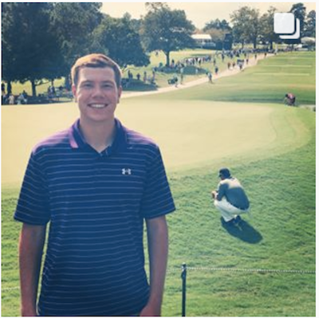
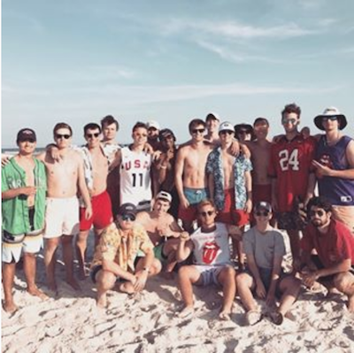
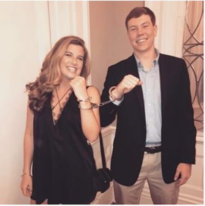
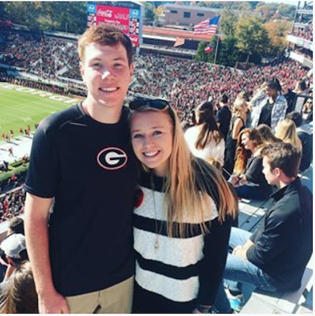
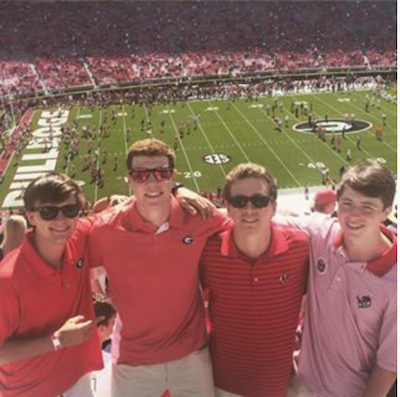

Here's a bit about me.
I was born on November 10th, 1997 in Lawrenceville, Georgia. I was brought into the family of my two parents, Kristi and Mike, along with my brother, Jake, who is just under three years older than me. Growing up, I always had lots of energy and was very into sports as a result. I played numerous backyard sports throughout my childhood, but once I turned around 10 years old, I started to become more focused on tennis and especially soccer. I played on advanced travel soccer teams from then on, and I also played on my high school soccer team all four years, including three years as the starting varsity goalkeeper. High school soccer produced some of the best memories of my soccer career due to the comradery I shared with my teammates since I had grown up and gone to school with most of them my whole life. It was also special playing on the football field of my school because my friends who had never watched me play soccer growing up would come out and cheer the team on, which inspired us all to play better.
|  |  | |
East Lake Golf Club |
One of my favorite UGA hype videos |
Never change Gulf Shores |
|  |  |  |
Last time I'm in cuffs |
We want Bama! |
Saturdays are For the Boys |
Click on any of the above pictures to see more of me. |
At UGA, I like to keep myself busy by staying involved in a number of organizations throughout campus. First off, I am a part of the Delta Sigma Phi fraternity which has offered me many social and academic opportunities and joining this fraternity is still one of the best decisions I have made in college. I am also on the UGA Club Tennis Team. We have weekly practices along with tournaments about once a month playing against some of the best schools around the South and even the nation. With such a competitive team, it is really fun to go to practice every week and get some exercise while also playing lots of great tennis. Other organizations I am involved with are the Atlas Business Society, which is a selective club for freshman and sophomore business students that teach the members about the ins and outs of the business world, and Shop With a Bulldawg, where a partner and I take a less fortunate child Christmas shopping using money that we raised.
| Soccer | Tennis | Football | |
| Age Started Playing | Age 5 | Age 8 | Age 8 |
| Level of Competitiveness Played | Recreationally (ages 5-10), competitive / travel club teams (ages 10-18), high school JV / Varsity, intramural sports in college. | Mix of traveling and playing competitive tournaments and playing neighborhood leagues throughout childhood, Club team in college. | Mainly backyard football during childhood, one season of flag football in high school, intramural flag football in college. |
| Favorite Memory of the Sport | Saving 4 penalty kicks in one shootout as goalkeeper leading my club / travel team to victory in the semifinals of the U14 state championship. | Getting third place in the Southern Singles Championship in the 10 and under division after defeating many top players from around the southeast. | Playing backyard football in elementary school with other kids around my neighborhood while being the youngest one out there. |